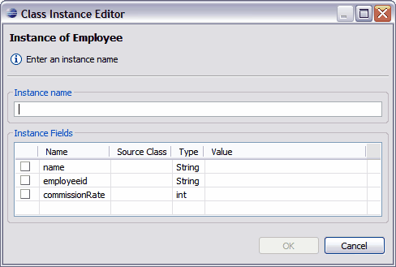

Editing a Class Instance
After you successfully create a class instance diagram, you can edit your class instance using the Class Instance Editor. You use the Class Instance Editor to set new values for attributes, remove values previously set for attributes of the instance, or rename the instance.

To edit a class instance:
- Open the Class Instance Diagram by double-clicking on the .wod file in the Tigerstripe Explorer.
- Locate the instance that you want to edit in the Instance Diagram.
- Double-click the instance and the Class Instance Editor dialog box opens.
- Edit the information in the Instance Fields area of the dialog box and click OK to save your changes.
Related Topics
The Instance Diagram Editor
Using the Instance Diagram Editor
Creating a Class Instance Diagram
Setting Class Instance Attributes
Deleting a Class Instance Diagram
Additional Instance Diagram Editor Tools
 Deleting a Class Instance Diagram
Deleting a Class Instance Diagram
© copyright 2005, 2006, 2007 Cisco Systems, Inc. - All rights reserved